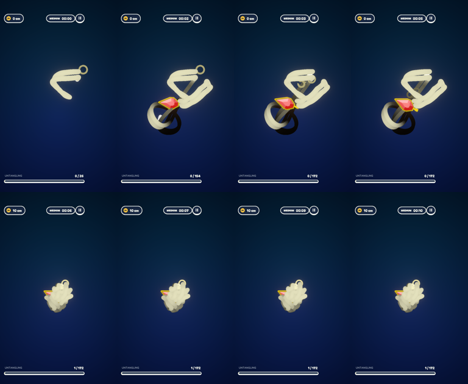
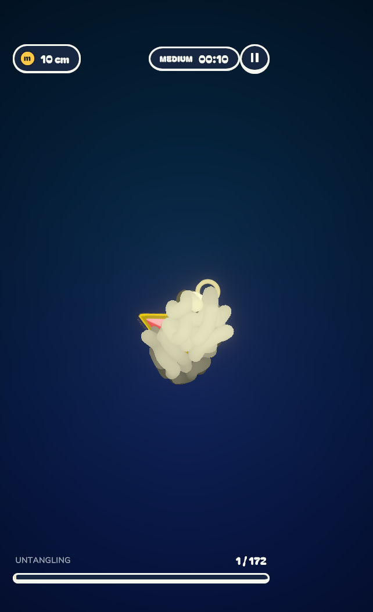
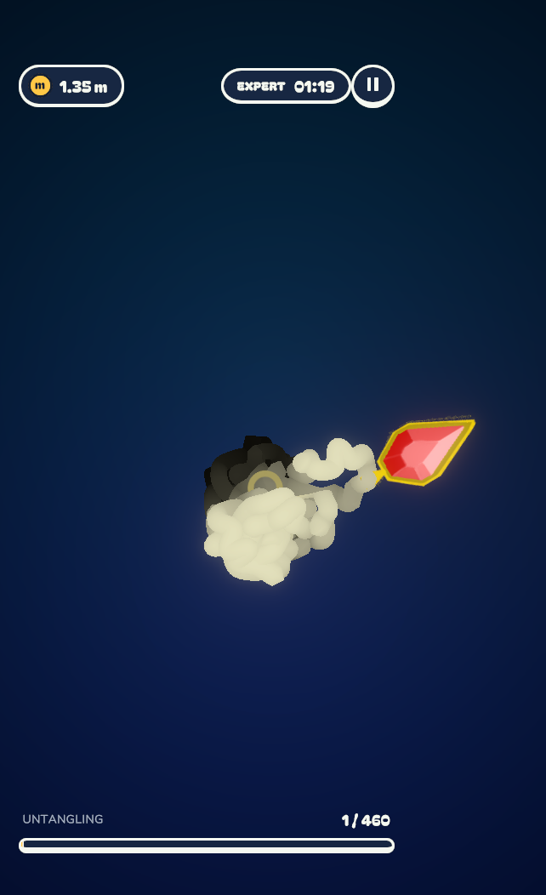

Medium: the doubled strand spawns (top row), then squeezes into a ball (bottom row)

Medium, after the squeeze: 172 nodes, one knot tied into the doubled core

Expert: 460 nodes, 3-4 doubled knots
